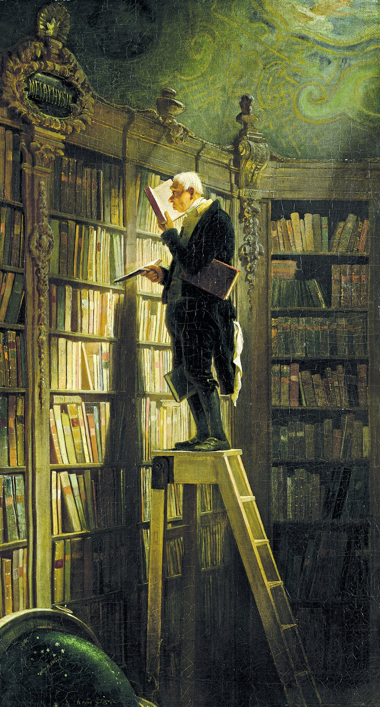

Première générale · Français · Lycée général et technologique
En lisant en écrivant
Julien Gracq, lecture, écriture et littérature d'idées. Fiche de présentation de la séquence.
- Première générale
- Français
- 12 séances
- Œuvre complémentaire
- 3 évaluations

Problématique. Un livre s'achève-t-il sur la page, ou dans la lecture qui le réinvente ?
Le cadre
| Rubrique | Contenu |
|---|---|
| Niveau | Première générale, Français, lycée général et technologique |
| Œuvre | Julien Gracq, En lisant en écrivant, José Corti, 1980. Œuvre complémentaire, non l'une des trois œuvres du programme national de l'année. |
| Objet d'étude | La littérature d'idées du XVIe siècle au XVIIIe siècle (BO n° 22 du 29 mai 2025) |
| Durée | Douze séances de 55 minutes, conduites sur 52, avec un point d'arrêt vers la minute 44 et une sortie de secours de huit minutes |
| Méthode | Spirale de Gorse, conçue par Madame Carole Paoli Pompougnac |
Cinq objectifs
- Compréhension de l'écrit. Lire un essai : métaphores, négation corrective, implicite. Confronter Gracq à Proust, Sartre, Tournier, puis aux moralistes.
- Compréhension de l'oral. Écouter un extrait court (2 à 8 min), avec une tâche précise : France Culture, 1969 ; INA, 1970.
- Expression écrite. Tenir une trace à chaque séance. S'entraîner au commentaire et à la dissertation. Écrire un court essai.
- Expression orale en continu. Prendre la parole à chaque séance, trente à soixante secondes. Présenter l'œuvre, comme à la seconde partie de l'oral.
- Interaction orale. Travailler en binômes. Tenir l'entretien : écouter, reformuler, préciser.
Les épreuves préparées
| Épreuve | Ce que la séquence prépare |
|---|---|
| Écrit, voie générale (4 h) | Commentaire ou dissertation. Entraînement en séance 9 et dans le livret, sans en faire l'évaluation sommative. |
| Oral (30 min de préparation, 20 min) | Lecture à voix haute, explication linéaire, question de grammaire (séances 6 et 8) ; présentation d'une œuvre choisie et entretien (séance 12). |
| Contraction et essai | Entraînement facultatif, dans le livret. C'est l'écrit de la voie technologique, proposé ici comme exercice de synthèse, non comme épreuve de cette classe. |
Note de service du 11 septembre 2026, BO spécial n° 4 du 17 septembre 2026, applicable à compter de la session 2027 : la maîtrise de la langue est exigée à chaque évaluation.
Déroulé, séance par séance
| Séance | Titre | Travail |
|---|---|---|
| 1 | Le titre sans virgule | Diagnostique. Le gérondif. France Culture, 7 janvier 1969, 0:00 à 6:00. |
| 2 | Le lecteur metteur en scène | Section Roman, p. 132. Spirale de Gorse. Négation corrective. |
| 3 | Lire n'est pas voir un film | Section Roman, p. 132 (fidélité). France Culture, 14 janvier, 0:00 à 6:00. « non par… mais… ». |
| 4 | La chaîne des écrivains | Section L'écriture, p. 143. Fantin-Latour, Un coin de table. Question rhétorique. « pas de… sans… ». |
| 5 | Trois théories de la lecture | Proust, Sartre, Tournier. Prépare l'écrit de mi-parcours. |
| 6 | La phrase de Gracq, la question de grammaire | lui, négation, pourvu que + subjonctif. Section Lecture, p. 126 et p. 130. |
| 7 | Gracq à l'écran, Gracq à la radio | INA, 5 min 38 s (repli : France Culture). Chardin. Restitution. |
| 8 | L'explication linéaire, pour l'oral | Modèle en trois mouvements. Question de grammaire. |
| 9 | La dissertation, en temps limité | Sujet « dans quelle mesure… toujours un dialogue… ». Quatre temps de brouillon. |
| 10 | Gracq parmi les moralistes | La Boétie, Montaigne, Pascal. Limites du rapprochement. |
| 11 | Écrire, en lisant | Atelier d'essai « En lisant [œuvre] en écrivant ». Vermeer. |
| 12 | Présenter l'œuvre, tenir l'entretien | Oral sommatif, 5 à 8 min, puis entretien. Fantin-Latour, La Lecture. |
Chaque séance comporte un travail de langue, des flashcards, une prise de parole, une trace écrite, un devoir et une sortie de secours.
Trois évaluations
| Évaluation | Quand | Forme |
|---|---|---|
| Diagnostique | Séance 1 | « Qu'est-ce que lire, pour vous ? » 8 min à l'écrit, 30 secondes à l'oral. Point de départ, sans note lourde. |
| Mi-parcours | Après la séance 5 | Écrit, 50 à 55 min. Quatre questions sur la section L'écriture, p. 143 (la chaîne des écrivains), /20. La langue est notée. |
| Sommative | Séance 12 | Oral : présentation de l'œuvre, 5 à 8 min, puis entretien, 5 à 8 min, /20. Ensuite, une version écrite améliorée. |
Chaque évaluation a une grille professeur et une grille d'autocorrection, dans le livret. L'écrit de quatre heures (commentaire ou dissertation) reste un entraînement, non l'évaluation sommative.
Téléchargements
Cinq documents, chacun en PDF, Word et LibreOffice. Licence CC BY-NC-SA 4.0 : vous pouvez utiliser et adapter ces documents en citant leur autrice, sans usage commercial, et en partageant vos versions dans les mêmes conditions.
-
Fiche de présentation (cette page, à imprimer)
PDF Word (.docx) LibreOffice (.odt) -
Séquence élève (19 pages)
PDF Word (.docx) LibreOffice (.odt) -
Fiche professeur (3 pages)
PDF Word (.docx) LibreOffice (.odt) -
Fiche de correction (14 pages)
PDF Word (.docx) LibreOffice (.odt) -
Version accessible : fiches autonomes (15 pages)
PDF Word (.docx) LibreOffice (.odt)
Madame Carole Paoli Pompougnac
conçu par Madame Carole Paoli Pompougnac, mis en page par Grok. Couverture : Carl Spitzweg, Der Bücherwurm (Le Rat de bibliothèque), vers 1850, Museum Georg Schäfer, Schweinfurt, domaine public. Spirale de Gorse : illustration originale, dans la séquence. Méthode de la spirale de Gorse conçue par Madame Carole Paoli Pompougnac. Les textes de Julien Gracq sont cités courtement, José Corti, 1980.
Retour à la séquence · Lettres, lycée général et technologique